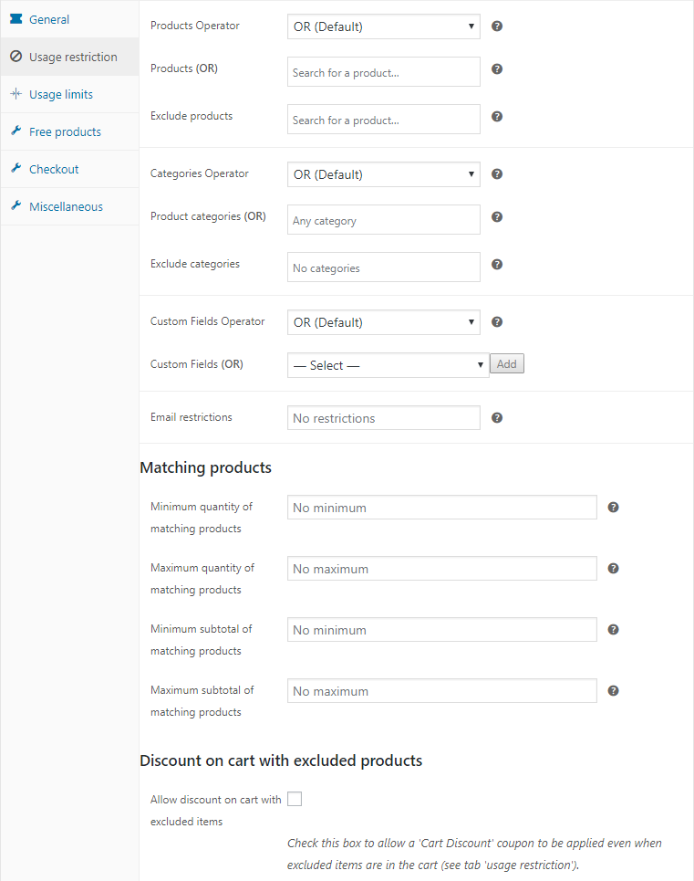

Additional usage restrictions
Several features are added to the Usage Restriction-tab of the coupon edit page. Here extra rules can be configured that work in combination with the Products, Exclude products, Product categories and Exclude categories rules.

AND Products (not OR)
By default a coupon validates if only one of the selected products is in the cart. Check this box if ALL of the products entered on the Usage Restriction-tab must be in the cart to validate the coupon. The word 'OR' or 'AND' is displayed next to the 'Products'-field on the Usage Restriction-tab for clarification.
AND Categories (not OR)
By default a coupon validates if a product from any of the selected categories is in the cart. Check this box if products from ALL of the categories entered on the Usage Restriction-tab must be in the cart to validate the coupon. The word 'OR' or 'AND' is displayed next to the Products-field on the Usage Restriction-tab for clarification.
Minimum/maximum quantity of matching products
The coupon will only validate if the number of products matching the product or category restrictions (on the Usage Restriction-tab in the cart is within this range. If no product or category restriction is entered, the total quantity of all of the products in the cart will be used.
Minimum/maximum subtotal of matching products
The coupon will only validate if the total value of the products matching the product or category restrictions (on the Usage Restriction-tab in the cart is within this range. If no product or category restriction is entered, the total value of all of the products in the cart will be used.
Please note: The difference between this option and the 'minimum/maximum spend' on the 'General'-tab is that on the general tab the subtotal of all of the items in the cart is compared.
Discount on cart with excluded products (PRO)
This option is only visible if the discount type is Cart Discount or Cart % Discount.
By default, When the coupon is setup as a 'Cart Discount' it will never validate a coupon when an excluded product is in the cart (this is how WooCommerce Coupons work). By checking this box the coupon will still validate when an excluded product is in the cart. Useful for cart discounts based on a subtotal of matching products, but having some products or categories excluded.